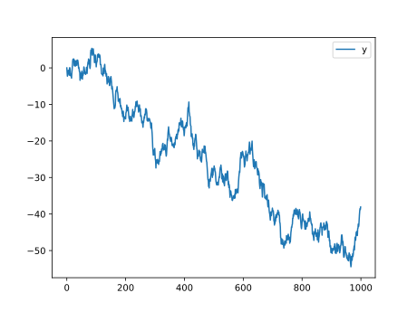

With Entangled and Brei you can automate your work from within Markdown. Similar to how you would integrate data analysis and visualisation in a Jupyter notebook, Entangled with Brei lets you put all your important code where you want it, and have the research output be directly linked to the presented content. However, Entangled uses a much more powerful literate programming idiom and Brei a much more comprehensive evaluation strategy. Meaning:
- Entangled: You write code where and how you want it presented.
- Brei: Results are computed only once, or when input data or source code actually changed.
The design of both Entangled and Brei was done with some important core values in mind:
- readability: do I understand what the authors have done precisely?
- reproducibility: do I get the same results repeating the exact same instructions as the authors?
- replicability: do I get similar results by reinterpreting the authors instructions or using a different but equivalent data set?
- reusability: can I reuse what the authors did and apply it to my own work?
If you are familiar with GNU Make, you could also choose to use Make instead of Brei. Here are some reasons why you might use Brei:
- Some members of your team run on Windows and don’t have GNU Make installed.
- Your workflows will be configured in TOML or JSON. Users won’t have to learn a new language.
- JSON support makes writing workflow generators easier.
- Your workflows become more portable.
- You have fewer dependencies (only Python &), so your work becomes easier to reuse.
That being said, Make is the more tried and proven alternative, and
similar results can be achieved with it. Entangled has a
build hook that utilizes Make much in the same manner as
the brei hook does Brei.
There are many other scientific workflow systems that function similar to Brei, all with a slightly different usability focus or user community.
Project setup
To start a new project with the same features as shown here, you can
use the pandoc project template. In addition to installing
Entangled (pip install entangled-cli) you’ll need Pandoc with Lua
support.
# this is a work in progress, the pandoc template is not yet available,
# rather it will be extracted from the current repository (example-brei)
entangled new pandoc my-awesome-projectThe Entangled configuration looks as follows:
version = "2.0"
watch_list = ["docs/*.md"]
hooks = ["quarto_attributes", "brei"]
<<brei>>Quarto attributes
We have enabled both the quarto_attributes and
brei hooks. Quarto is a project that combines the powers of
RMarkdown with Jupyter, and is relatively easy to use. In Quarto you can
add attributes to code blocks by including them in comments with a
vertical bar | added:
#| description: prints a friendly message
print("Hi!")With quarto_attributes enabled, Entangled will behave as
if those attributes are part of the attributes inside the code block
curly braces. It is important that the quarto_attributes go
first, as the hooks will be evaluated in order of appearance in the
config.
Brei
In the following examples we use Brei to automate scientific
computations. Here we also present the Brei configuration in
entangled.toml that makes these demos work. In your own
work you should keep these TOML files separate, so you can focus on the
actual science. Also, make sure to check out the Brei documentation.
The brei hook extracts tasks from the literate source,
and puts them in .entangled/tasks.json. The
pandoc project template also ships with a workflow in
docs/weave.toml that helps building HTML output using
Pandoc. We define our main workflow commands in
entangled.toml in the brei section. We can
include the other files:
[brei]
include = ["docs/weave.toml", ".entangled/tasks.json"]In this example, we will be doing some plotting with Gnuplot, mainly to show how easy it is to setup.
[brei.runner.gnuplot]
command = "gnuplot"
args = ["${script}"]We will put all figures in docs/fig. Some people will
browse the documentation on Github, putting figures there makes sure
that relative paths work for both the Markdown and the rendered HTML.
When we build the website, we need to copy those figures to
docs/site/fig. Currently no glob patterns are supported
yet, so we need to list all figures in there.
[[brei.call]]
template = "copy"
collect = "copy-figures"
[brei.call.args]
srcdir = "docs/fig"
tgtdir = "docs/site/fig"
basename = ["sine.svg"]
[[brei.call]]
template = "pandoc"
collect = "html"
[brei.call.args]
basename = ["index"]
[[brei.task]]
name = "weave"
requires = ["#html", "#static", "#copy-figures", "#data-products"]Simple Plotting
For our first example, we create a simple plot using Gnuplot. The
following creates a plot of a sinus function. The stdout
output of Gnuplot is passed to the file docs/fig/sine.svg.
Then we include that file in the Markdown with normal image syntax.
#| description: plot a sine
#| stdout: docs/fig/sine.svg
set term svg background "white"
set xrange [-pi:pi]
set key top left
plot sin(x)Full Workflow
The above example is kind of trivial. Usually, when you do serious work, you run a computation that might take a while, then move on to visualize its results, and so on. If you change something in the middle of your analysis, you don’t want to rerun the entire computation. Also, suppose you want to know which version of your software created a certain result. We can involve Git here.
Commit specific output
In this bit we configure Brei to put output files in a subdirectory according to the commit id.
tree datadata
├── 51fbd6f9082619b37b3bbfce0c2e2b34a63df7a5
│ ├── fig
│ │ └── brown-noise.svg
│ └── output.csv
├── 932f07dfdf4ab963a6406320bca1714aebd003f0
│ ├── fig
│ │ └── brown-noise.svg
│ └── output.csv
├── b0ed5d96febb2ca5a71867129d683d6cf5fdb649
│ ├── fig
│ │ └── brown-noise.svg
│ └── output.csv
└── latest -> 51fbd6f9082619b37b3bbfce0c2e2b34a63df7a5
8 directories, 6 filesWe create two tasks, one that obtains the current git commit id, and the other creates the directory where output will go.
[[brei.task]]
description = "Obtain git commit id"
stdout = "var(commit)"
script = "git rev-parse --verify HEAD"
[[brei.task]]
description = "Create data output dir"
name = "output-prep"
script = """
mkdir -p data/${commit}
ln -snf ${commit} data/latest
"""We’ll have a specialized copy template for copying data products from
data/${commit} to docs/site.
[brei.template.copy-from-data]
description = "copying `${pathname}`"
requires = ["data/${commit}/${pathname}"]
creates = ["docs/site/${pathname}"]
script = "cp data/${commit}/${pathname} docs/site/${pathname}"Make some noise
Now, to test this, we write a script that writes to the folder of the current git commit.
#| description: Generate data
#| creates: data/${commit}/output.csv
#| requires: #output-prep
#| collect: data
import numpy as np
import pandas as pd
from itertools import islice, accumulate
def white_noise():
while True:
yield np.random.normal()
N = 1000
y = np.fromiter(accumulate(white_noise()), dtype=float, count=N)
df = pd.DataFrame({"y": y})
df.to_csv("data/${commit}/output.csv")In a next script we can read the generated data and produce a figure.
#| description: plot brown noise
#| creates: data/${commit}/fig/brown-noise.svg
#| requires: data/${commit}/output.csv
#| collect: figures
import pandas as pd
from matplotlib import pyplot as plt
from pathlib import Path
outfile = Path("data/${commit}/fig/brown-noise.svg")
outfile.parent.mkdir(parents=True, exist_ok=True)
data = pd.read_csv("data/${commit}/output.csv", index_col=0)
fig, ax = plt.subplots()
data.plot(ax=ax)
fig.savefig(outfile)We need to make sure that the figure is copied.
[[brei.call]]
template = "copy-from-data"
collect = "data-products"
[brei.call.args]
pathname = ["fig/brown-noise.svg"]
Interactive plots with PlotLy
NYI